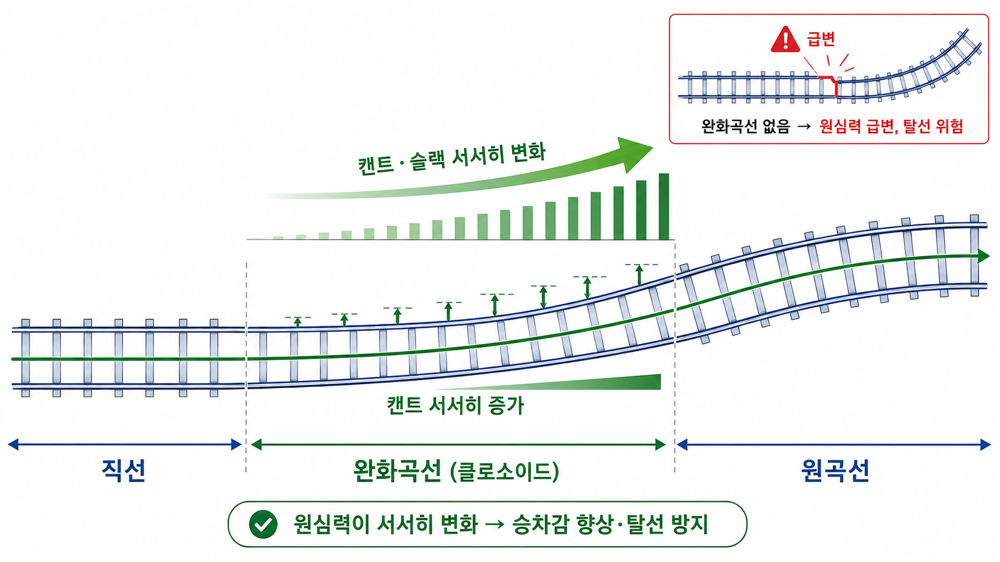
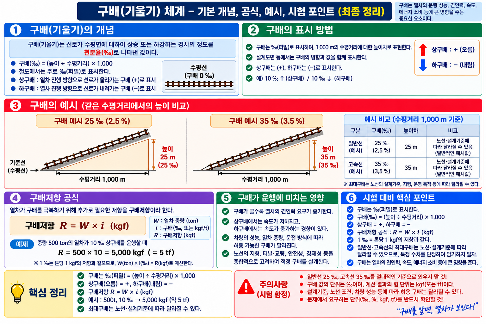
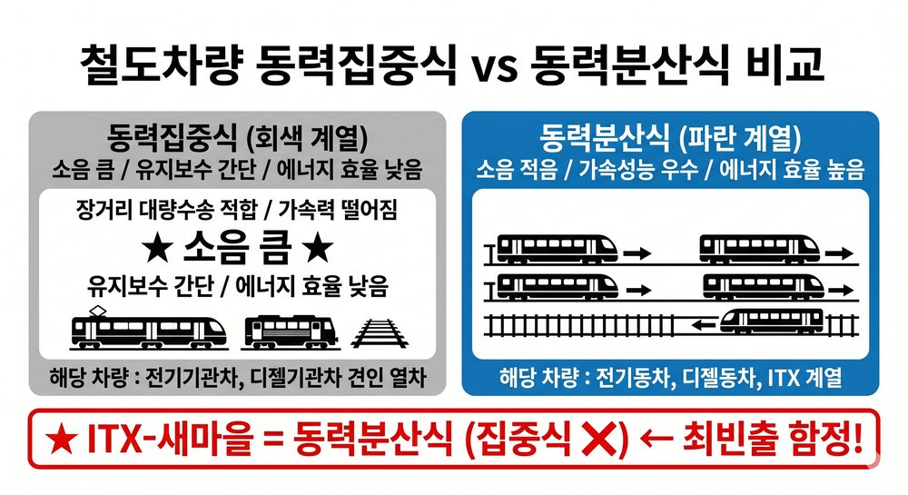
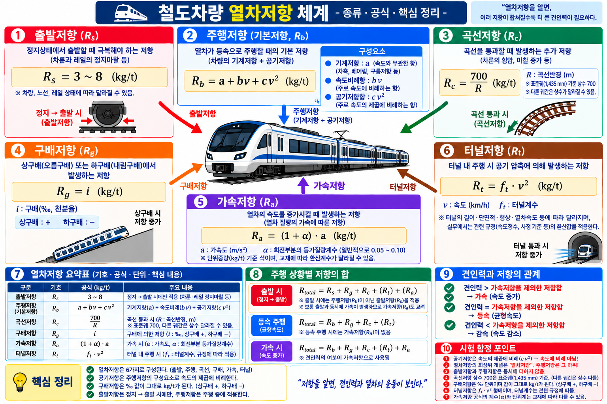

PART 1. 총론 — 철도 개념·분류·역사▲
개념 01철도 특징 비해당
| 철도 특징 O | 철도 특징 X |
|---|---|
| 신속성·신뢰성·안정성·친환경성·경제성 에너지효율성·대량수송성·장거리성·편리성 | 기동성 ❌ (자동차 특징) |
⚠️ 함정 주의: 기동성 = 자동차 특징 ← 철도 특징으로 교체 함정
이론 배경: 철도는 정해진 레일 위만 운행하므로 원하는 곳으로 자유롭게 이동하는 기동성이 없습니다. 이것이 자동차와의 핵심 차이점이며, 시험에서 가장 자주 나오는 함정입니다.
📝 기출 예시
Q. 철도의 특징으로 옳지 않은 것은?
정답: 기동성 (자동차의 특징)
오답함정: "에너지효율성이 없다"는 오답
[철도왕 교재]
📌 철도의 일반적 특성 4가지 (p208 출제 포인트)
📌 철도의 일반적 특성 4가지 (p208 출제 포인트)
- 정시성 — 레일 위 주행으로 교통체증 없이 정확한 시간 운행
- 고속성 — 고속철도 등 일반 교통수단 대비 빠른 이동
- 친환경성 — 배기가스 배출 적고 에너지 효율 높음
- 대량수송성 — 한 번에 많은 여객·화물 운반 가능
개념 02철도 법제상 분류 비해당
국유철도 / 지방철도 / 경편철도 / 전용철도
⚠️ 함정 주의: 공영철도 → 법제상 분류 아님
이론 배경: 철도사업법상 분류는 소유·운영 주체에 따라 국유·지방·경편·전용 4종으로 나뉩니다. 공영철도는 일반적 표현이지 법제상 공식 분류 명칭이 아닙니다.
📝 기출 예시
Q. 철도 법제상 분류에 해당하지 않는 것은?
정답: 공영철도
오답함정: "전용철도가 법제상 분류에 없다"는 오답
개념 03수송수요 예측방법 4종 + 비해당
| 방법 | 설명 |
|---|---|
| 시계열분석법 | 시간적 경과에 따른 과거 변동 통계 |
| 요인분석법 | 요인변수와 수요 관계 분석 |
| OD표 작성법 | 출발지-도착지 교통량 행렬 |
| 중력모델법 | 교통량 ∝ 수요량 / 거리에 반비례 |
⚠️ 함정 주의: 선로이용률 → 예측방법 아님 (선로용량 산정 지표)
⚠️ 함정 주의: 중력모델 거리: 반비례 ← 비례로 교체 함정
이론 배경: 수송수요 예측방법 4종 중 중력모델법은 물리학의 만유인력을 교통에 적용한 것입니다. 거리가 멀수록 수요가 감소(반비례)합니다. "비례"로 바꾸는 함정에 주의합니다.
📝 기출 예시
Q. 출발지-도착지 교통량을 행렬 형태로 나타내는 예측방법은?
정답: OD표 작성법
오답함정: "선로이용률"을 예측방법으로 포함하는 오답
개념 04철도 역사 연도
| 사건 | 연도 | 함정 |
|---|---|---|
| 세계 최초 여객철도 (영국 리버풀~맨체스터) | 1830년 | 1835년 교체 |
| 우리나라 최초 철도 (경인선) | 1899년 | 1898·1900 교체 |
| 경부선 전구간 개통 | 1905년 | 1903·1907 교체 |
이론 배경: 세계 최초 여객철도(1830년 영국 리버풀~맨체스터선)와 우리나라 최초 철도(1899년 경인선)의 연도를 정확히 암기해야 합니다. 연도 숫자를 교체하는 함정이 자주 출제됩니다.
📝 기출 예시
Q. 우리나라 최초 철도인 경인선이 개통된 연도는?
정답: 1899년
오답함정: "1898년" 또는 "1900년"으로 혼동하는 오답
개념 05수송 서비스 개량 vs 수송력 증강
| 구분 | 예시 | 비해당 |
|---|---|---|
| 수송 서비스 개량 | 역 냉난방화, 에스컬레이터, 장애자시설 확충 | |
| 수송력 증강 | 복선화, 전철화, 차량 증차 | 철도관련법령 정비 ❌ |
이론 배경: 수송 서비스 개량은 기존 시설의 편의성을 높이는 것(에스컬레이터 등), 수송력 증강은 운반 능력 자체를 늘리는 것(복선화 등)입니다. 법령 정비는 어느 쪽에도 해당하지 않습니다.
📝 기출 예시
Q. 수송력 증강 방법에 해당하지 않는 것은?
정답: 철도관련법령 정비
오답함정: "에스컬레이터 설치"를 수송력 증강으로 답하는 오답
개념 06민간투자 방식 — BTL vs BTO ⚠️
| 구분 | 개념 | 투자 회수 방법 | 함정 |
|---|---|---|---|
| BTL (Build-Transfer-Lease) | 건설 → 소유권 이전 → 공공이 임차 | 정부·지자체 임대료 수입 | 운영수익 회수 ❌ |
| BTO (Build-Transfer-Operate) | 건설 → 소유권 이전 → 민간 운영 | 이용자 요금(운영수익) | 임대료 회수 ❌ |
| BOO (Build-Own-Operate) | 건설 → 소유권 미이전 → 민간 소유·운영 | 이용자 요금 | 소유권 이전 ❌ |
⚠️ 함정 주의: BTL = 임대료(Lease) 회수, BTO = 운영수익(Operate) 회수 — 회수방법 교체 함정
이론 배경: 민간투자 방식에서 B(Build)=건설, T(Transfer)=소유권 이전, L(Lease)=임차, O(Operate)=운영, O(Own)=소유. BTL은 투자 위험이 낮아 사회기반시설(학교·도서관·철도 등)에 주로 적용됩니다.
📝 기출 예시
Q. 민간이 건설 후 소유권을 공공에 이전하고 임대료를 받는 민간투자 방식은?
정답: BTL (Build-Transfer-Lease)
오답함정: "BTO"로 답하는 경우 (BTO는 운영수익으로 회수)
개념 07낙석방지시설 ⚠️ 비해당 구분
| 구분 | 종류 |
|---|---|
| 낙석방지시설 ○ | 낙석방지 울타리 / 낙석방지망 / 낙석방지 옹벽 |
| 낙석방지시설 ✕ | 가드레일(탈선방지레일) — 탈선 방지 목적, 낙석과 무관 |
⚠️ 함정 주의: 가드레일(탈선방지레일) → 낙석방지시설 아님. 분기기·곡선부 탈선 방지용
이론 배경: 낙석방지시설은 절토·암반 구간에서 돌이 선로로 떨어지는 것을 막는 시설입니다. 울타리·망·옹벽 3종이 해당합니다. 가드레일은 차량 탈선 방지 목적으로 궤도 내부에 설치하는 레일로, 낙석과는 무관합니다.
📝 기출 예시
Q. 낙석방지시설에 해당하지 않는 것은?
정답: 가드레일(탈선방지레일)
오답함정: "낙석방지망"을 비해당으로 선택하는 오답
PART 2. 차량▲
개념 06철도 종류 분류

철도 종류 분류 구조도
| 종류 | 구동방식 | 구배한도/특징 |
|---|---|---|
| 점착(마찰)철도 | 차륜-레일 마찰력 | 마찰계수 0.10~0.25 / 구배한도 20~50‰ |
| 치궤조(치차)철도 | Rack레일+치차 | 급구배 운전 가능 |
| 강색철도 | 강선(와이어) 견인 | 평균구배 100~200‰ |
| 모노레일 | 고무타이어 | 급구배·급곡선 용이 |
이론 배경: 점착철도는 차륜-레일 마찰력으로 구동하는 일반 철도입니다. 치궤조(치차)철도는 산악 급구배 구간에서 Rack 레일과 치차(톱니바퀴)의 맞물림으로 등반합니다.
📝 기출 예시
Q. 급구배 구간 운전에 사용하는 구동 방식은?
정답: 치궤조(치차)철도 — Rack 레일+치차
오답함정: "점착철도가 급구배에 적합하다"는 오답
개념 07전기방식 비교
| 방식 | 대표 | 특징 |
|---|---|---|
| 교류 25,000V | 국철 전기철도 | 점착성능 우수, 소형이어도 대량 견인 |
| 직류 1,500V | 구형 도시철도 | 터널 단면 작음, 통신유도장애 적음 |
⚠️ 함정 주의: 직류 25,000V → 없음. 교류 25,000V가 국철 표준
이론 배경: 교류 25,000V는 변압기로 전압 변환이 쉬워 변전소 간격을 넓힐 수 있습니다. 직류 25,000V는 존재하지 않습니다. 교류=25,000V, 직류=1,500V로 구분해서 외웁니다.
📝 기출 예시
Q. 국철 전기철도의 표준 전기방식은?
정답: 교류 25,000V
오답함정: "직류 25,000V"라고 답하는 오답
[철도왕 교재]
📌 교류 25,000V vs 직류 1,500V — 혼동 주의
| 방식 | 적용 | 특징 |
|---|---|---|
| 교류 25,000V | 국철 (KTX·새마을 등) | 점착성능 우수, 변전소 간격 넓음 |
| 직류 1,500V | 구형 도시철도 | 터널 단면 작음, 통신유도장애 적음 |
⚠️ 함정: "직류 25,000V" → 존재하지 않음! / "교류가 통신유도장애 적다" → 직류가 적음
개념 08집전장치 비해당
집전장치 O: 팬터그래프 / 트롤리 폴 / 뷰겔 / 집전슈

집전장치 종류 비교
⚠️ 함정 주의: 축전지 → 집전장치 아님 (전력 저장장치)
이론 배경: 집전장치는 전차선으로부터 전력을 받아 차량에 공급하는 장치입니다. 축전지는 전력을 저장하는 장치로, 집전이 아닌 저장 기능이므로 집전장치가 아닙니다.
📝 기출 예시
Q. 집전장치의 종류가 아닌 것은?
정답: 축전지 (전력 저장장치)
오답함정: "팬터그래프가 집전장치가 아니다"라는 오답
개념 09제동·공전 핵심
| 항목 | 내용 | 함정 |
|---|---|---|
| 철도 제동방식 | 공기제동 | 유압 아닌 공기압 |
| 점착력과 제동력 | 점착력 ≥ 제동력 | >, ≤, < 교체 |
| 공전 방지 | 레일 모래 / 기관차 정비 / 선로보수 | 출발 급가속 = 공전 유발 ❌ |
⚠️ 함정 주의: 출발 시 급가속 → 인장력 최대화 ❌ → 공전 유발 (방지법 아님)
이론 배경: 철도 제동은 공기압(압축공기)을 이용합니다. 점착력이 제동력보다 크거나 같아야 차바퀴가 미끄러지지 않고 제동됩니다. 출발 시 급가속은 공전을 방지하는 것이 아니라 유발합니다.
📝 기출 예시
Q. 공전 방지 방법으로 적절하지 않은 것은?
정답: 출발 시 급가속 (공전 유발)
오답함정: "레일에 모래를 뿌린다"를 오답으로 착각하는 경우
| 구분 | 내용 |
|---|---|
| 점착계수(μ) | 점착력 ÷ 차량중량 (범위: 0.10~0.30) |
| 레일 건조 시 | μ ≈ 0.25~0.30 |
| 레일 습윤(비·눈) 시 | μ ≈ 0.10~0.15 → 공전 위험 ↑ |
| 공전 발생 조건 | 점착력 < 구동력 → 바퀴가 헛돔 |
⚠️ 함정 주의: 점착계수는 건조 시 높고(0.25~0.30), 습윤 시 낮음(0.10~0.15). 비·눈 오면 공전 위험 증가
개념 10모노레일 특징·문제점
| 특징(장점) | 문제점 |
|---|---|
| 소음·진동·대기오염 거의 없음 | 분기장치 복잡, 작동시간 김 |
| 고무타이어 → 급구배·급곡선 용이 | 타 교통기관과 승환 어려움 |
| 지하철 대비 건설비 싸고 공기 짧음 | 차량고장 시 피난 시간 오래 걸림 |
⚠️ 함정 주의: '소음·진동·대기오염 많다' → 틀림. 거의 없음
이론 배경: 모노레일은 고무타이어로 주행하여 소음·진동·대기오염이 거의 없습니다. 단, 분기장치가 복잡하고 고장 시 승객 피난에 시간이 걸리는 단점이 있습니다.
📝 기출 예시
Q. 모노레일의 특징으로 옳지 않은 것은?
정답: 소음·진동·대기오염이 많다 (실제로는 거의 없음)
오답함정: "급곡선 통과가 어렵다"는 오답 (실제로 용이함)
개념 11직류전동기 속도제어 vs 유도전동기 VVVF ⚠️
| 전동기 종류 | 속도 제어 방법 | 특징 |
|---|---|---|
| 직류직권전동기 | ① 저항 제어 (직렬·병렬) ② 약계자 제어 ③ 전압 제어 | 구형 전동차 방식 |
| 교류 유도전동기 | VVVF 인버터 제어 (Variable Voltage Variable Frequency) | 현대 전동차 표준 전압·주파수 동시 가변 |
⚠️ 함정 주의: VVVF = 유도전동기 제어 (직류직권에는 해당 없음)
이론 배경: 직류직권전동기는 저항·약계자·전압 제어로 속도를 조절합니다. 현대 전동차는 교류 유도전동기+VVVF 인버터 방식으로 에너지 효율과 제어 성능이 우수합니다. VVVF(가변전압가변주파수)는 전압과 주파수를 동시에 바꿔 속도를 제어합니다.
📝 기출 예시
Q. 직류직권전동기의 속도 제어 방법이 아닌 것은?
정답: VVVF 인버터 제어 (유도전동기 방식)
오답함정: "약계자 제어"를 비해당으로 선택하는 오답
개념 12고정축거 — 슬랙 설정 기준
| 용어 | 정의 | 활용 |
|---|---|---|
| 고정축거 | 동일 대차(또는 차체)의 선두축~후미축 거리 | 곡선 통과 시 슬랙 설정 기준 |
| 전체축거 | 차량 전체 제1축~최후축 거리 | 곡선 최소 반경 결정 |
⚠️ 함정 주의: 고정축거 = 대차 내 선두~후미축 (차량 전체 아님)
이론 배경: 고정축거가 클수록 곡선에서 레일과 차륜 플랜지 간섭이 커지므로 슬랙을 크게 설정해야 합니다. 슬랙 설정 계산의 핵심 입력값입니다.
📝 기출 예시
Q. 대차의 선두축과 후미축 사이 거리를 나타내는 용어는?
정답: 고정축거
오답함정: "전체축거"로 혼동하는 오답
PART 3. 선로▲
개념 11선로용량 수치
| 종류 | 수치 | 함정 |
|---|---|---|
| 단선 | 약 80회/일 | 100회 교체 |
| 복선 | 약 240회/일 | 200회 교체 |
| 전차전용 복선 | 70~100회 | |
| 선로이용률 표준 | 60% | 80% 교체 |
| 용량 종류 | 용도 |
|---|---|
| 한계용량 | 기존선 수송능력 한계 판단 |
| 실용용량 | 실제 운용 기준 |
| 경제용량 | 최저 수송원가가 되는 열차횟수 |
이론 배경: 선로용량은 하루 동안 해당 구간을 운행할 수 있는 최대 열차 횟수입니다. 선로이용률 표준은 60%로, 100% 사용 시 어떤 돌발 상황에도 대처하기 어렵습니다.
📝 기출 예시
Q. 복선 선로의 하루 운행 가능 열차 횟수는 약 몇 회인가?
정답: 약 240회
오답함정: "약 200회"로 혼동하는 오답
개념 12건축한계 vs 차량한계

건축한계 vs 차량한계
| 구분 | 의미 | 수치 |
|---|---|---|
| 건축한계 | 건조물 설치 불가 범위 | 폭 4.2m, 높이 5.15m |
| 차량한계 | 차량 크기 제한 범위 |
이론 배경: 차량한계는 차량이 초과하면 안 되는 최대 크기 기준이고, 건축한계는 구조물이 침범하면 안 되는 공간 기준입니다. 반드시 건축한계 > 차량한계 관계가 성립합니다.
📝 기출 예시
Q. 건축한계와 차량한계 중 크기가 더 큰 것은?
정답: 건축한계 (폭 4.2m, 높이 5.15m)
오답함정: "차량한계가 더 크다"는 오답
개념 13CTC vs ATC ⚠️ 핵심 함정

CTC vs ATC 기능 비교 도해
| 시스템 | 기능 | 함정 |
|---|---|---|
| CTC (열차집중제어) | 원격조작·감시 / 인력절약 / 평균속도 향상 / 선로용량 극대화 | 자동제동과 혼동 |
| ATC (자동열차제어) | 열차속도 높아지면 자동으로 제동 | CTC로 교체 함정 |
⚠️ 함정 주의: 열차속도 높아지면 자동제동 = ATC (CTC와 혼동 — 최빈출)
이론 배경: CTC(열차집중제어)는 관제사가 원격으로 신호·전철기를 조작하는 시스템이고, ATC(열차자동제어)는 허용 속도 초과 시 자동으로 제동을 거는 시스템입니다. 이름이 비슷해 자주 혼동됩니다.
📝 기출 예시
Q. 열차 속도가 허용 속도를 초과할 때 자동으로 제동을 거는 시스템은?
정답: ATC (열차자동제어장치)
오답함정: "CTC"로 혼동하는 오답
개념 14정거장 종류 비해당
| 정거장 종류 | 기능 |
|---|---|
| 역 | 여객 승강, 화물 적하 |
| 조차장 | 차량 입환·조성 |
| 신호장 | 열차 교행 또는 대피 |
⚠️ 함정 주의: 신호소 → 정거장 아님 (신호장과 구별)
이론 배경: 정거장의 종류는 역·조차장·신호장입니다. 신호소는 정거장이 아닙니다. 신호장(교행·대피 기능)과 신호소(신호 취급 장소)를 이름으로 혼동하지 않도록 주의합니다.
📝 기출 예시
Q. 정거장 종류에 해당하지 않는 것은?
정답: 신호소
오답함정: "신호장이 정거장이 아니다"라는 오답
개념 28슬랙·캔트 ⚠️ 곡선 구간 핵심
| 구분 | 정의 | 목적 | 함정 |
|---|---|---|---|
| 슬랙(Slack) | 곡선 구간에서 궤간을 넓히는 것 | 바퀴 밀림(플랜지 압력) 감소 | 좁힌다 ❌ |
| 캔트(Cant) | 곡선 구간에서 바깥쪽 레일을 높이는 것 | 원심력 상쇄, 탈선 방지 | 안쪽 레일 ❌ |
⚠️ 함정 주의: 캔트는 바깥쪽 레일을 높임 — 안쪽 레일로 교체 함정
★ 곡선이 급할수록 / 속도가 빠를수록 → 슬랙·캔트 모두 크게 적용
이론 배경: 곡선 구간에서 차량은 원심력으로 바깥쪽으로 쏠립니다. 캔트는 바깥쪽 레일을 높여 원심력을 상쇄하고, 슬랙은 궤간을 넓혀 차륜 플랜지 압력을 줄입니다. 공학적 원리로 이해하면 혼동이 없습니다.
📝 기출 예시
Q. 캔트(Cant)에서 높이는 레일은?
정답: 바깥쪽 레일 (외궤)
오답함정: "안쪽 레일을 높인다"는 오답
| 상황 | 발생 현상 | 위험 대상 |
|---|---|---|
| 캔트 과다 | 저속·정지 열차가 내측으로 쏠림 → 내측 레일 편마모 | 저속 열차 |
| 캔트 부족 | 원심력 미상쇄 → 승차감 저하 → 외측 레일 편마모·전도 위험 | 고속 열차 |
⚠️ 함정 주의: 캔트 과다=저속 위험(내측), 캔트 부족=고속 위험(외측) — 방향 혼동 최다 실수
[철도왕 교재]
📌 캔트 최대값 수치 암기 필수 (p191)
⚠️ 슬랙 최대값: 일반선 30mm, 완화구간에서 서서히 체감
📌 캔트 최대값 수치 암기 필수 (p191)
- 일반선 최대캔트: 160mm
- 고속선 최대캔트: 130mm
- 캔트 공식: C = GV² / 127R (G: 궤간(m), V: 속도(km/h), R: 반경(m))
⚠️ 슬랙 최대값: 일반선 30mm, 완화구간에서 서서히 체감
개념 29완화곡선
| 항목 | 내용 |
|---|---|
| 정의 | 직선과 원곡선 사이에 삽입하는 점이(漸移) 구간 |
| 목적 | 승차감 향상 / 급격한 원심력 변화 방지 / 탈선 위험 감소 |
| 효과 | 캔트·슬랙이 서서히 변화 (급변 없음) |
| 종류 | 클로소이드 곡선 (가장 많이 사용) / 3차 포물선 |

직선 → 완화곡선(클로소이드) → 원곡선 전이 구조
📐 그림 읽는 법 — 3구간으로 나눠서 이해
① 직선 구간: 레일이 수평으로 놓여 있고 캔트·슬랙 = 0. 원심력 없음.
② 완화곡선 구간 (클로소이드): 직선과 원곡선 사이에 삽입되는 점이 구간.
- 그림의 막대그래프(↑ 서서히 높아짐)가 이걸 보여줌 → 캔트·슬랙이 0에서 서서히 증가하여 원곡선의 최종값까지 부드럽게 연결됨.
- 열차가 이 구간을 지나는 동안 원심력이 점진적으로 커지므로 승객은 충격 없이 자연스럽게 느낌.
③ 원곡선 구간: 일정 반경(r)으로 계속 휘어지는 구간. 캔트·슬랙 최대값 유지.
🔴 완화곡선이 없으면? (우측 상단 빨간 박스)
직선에서 원곡선으로 바로 연결되면 캔트가 순간적으로 최대값으로 변하고 원심력이 급변 → 승객이 급격히 바깥쪽으로 쏠림 → 탈선 위험.
핵심 요약: 완화곡선은 "충격 완충제"다. 직선의 느긋함과 원곡선의 급격함 사이를 부드럽게 이어주는 다리 역할.
① 직선 구간: 레일이 수평으로 놓여 있고 캔트·슬랙 = 0. 원심력 없음.
② 완화곡선 구간 (클로소이드): 직선과 원곡선 사이에 삽입되는 점이 구간.
- 그림의 막대그래프(↑ 서서히 높아짐)가 이걸 보여줌 → 캔트·슬랙이 0에서 서서히 증가하여 원곡선의 최종값까지 부드럽게 연결됨.
- 열차가 이 구간을 지나는 동안 원심력이 점진적으로 커지므로 승객은 충격 없이 자연스럽게 느낌.
③ 원곡선 구간: 일정 반경(r)으로 계속 휘어지는 구간. 캔트·슬랙 최대값 유지.
🔴 완화곡선이 없으면? (우측 상단 빨간 박스)
직선에서 원곡선으로 바로 연결되면 캔트가 순간적으로 최대값으로 변하고 원심력이 급변 → 승객이 급격히 바깥쪽으로 쏠림 → 탈선 위험.
핵심 요약: 완화곡선은 "충격 완충제"다. 직선의 느긋함과 원곡선의 급격함 사이를 부드럽게 이어주는 다리 역할.
⚠️ 함정 주의: 완화곡선 없으면 직선→원곡선 진입 시 원심력 급변 → 승차감 불량·탈선 위험
📝 기출 예시
Q. 완화곡선이 없을 때 발생하는 문제는?
정답: 직선→원곡선 진입 시 원심력 급변 → 승차감 불량·탈선 위험
오답함정: "완화곡선 없어도 문제없다"는 오답
[철도왕 교재]
📌 완화곡선 핵심 정리 (p191)
⚠️ 기출 함정: 완화곡선 없으면 → 직선→원곡선 전이 시 원심력 급변 → 탈선·승차감 불량
📌 완화곡선 핵심 정리 (p191)
- 가장 많이 사용: 클로소이드(Clothoid) 곡선 = 코르뉴의 나선 = 오일러의 나선
- 선형 순서: 직선 → 완화곡선 → 원곡선
- 역할: 캔트·슬랙을 서서히 변화시켜 원심력 급변 방지
⚠️ 기출 함정: 완화곡선 없으면 → 직선→원곡선 전이 시 원심력 급변 → 탈선·승차감 불량
개념 30종곡선 — 구배 변화점 처리
| 구분 | 정의 | 설치 위치 |
|---|---|---|
| 완화곡선 | 직선↔원곡선 사이 평면 전이 구간 | 평면선형 변화점 |
| 종곡선 | 구배(기울기)가 변하는 곳의 수직면 곡선 | 종단선형 변화점 |
⚠️ 함정 주의: 완화곡선=평면 전이, 종곡선=수직면 기울기 변화 (혼동 주의)
이론 배경: 종곡선은 상구배→하구배, 또는 수평→구배 전환점에서 충격을 줄이기 위해 삽입하는 수직면 곡선입니다. 완화곡선이 수평(평면) 방향이라면, 종곡선은 수직(종단) 방향의 완충 장치입니다.
📝 기출 예시
Q. 종단선형에서 기울기가 변화하는 구간에 삽입하는 곡선은?
정답: 종곡선
오답함정: "완화곡선"으로 답하는 오답 (완화곡선은 평면선형)
개념 31곡선부 건축한계 확대 이유
| 원인 | 설명 |
|---|---|
| 차체 편기(偏倚) | 곡선에서 차체가 내·외측으로 기울어져 점유 공간 증가 |
| 캔트에 의한 기울기 | 외측 레일 상승으로 차체가 기울어져 상부 공간 확장 필요 |
⚠️ 함정 주의: 곡선부 건축한계 확대 = 차체 편기+캔트 기울기 때문. 슬랙 때문이 아님
이론 배경: 직선 구간에서 설계한 건축한계로는 곡선 구간에서 차체의 편기(내·외측 기울기)와 캔트로 인한 차체 기울기를 수용할 수 없습니다. 따라서 곡선반경에 따라 건축한계를 추가 확대합니다.
📝 기출 예시
Q. 곡선 구간에서 건축한계를 확대해야 하는 이유는?
정답: 차체 편기(偏倚)와 캔트에 의한 차량 점유 공간 증가
오답함정: "슬랙 때문에 궤간이 넓어져서"라는 오답
PART 4. 궤도·레일·분기기▲
개념 30궤도 구조 3요소
| 구성요소 | 역할 | 재질·형태 |
|---|---|---|
| 레일 | 차량 하중 지지 + 주행 안내 | 고강도 강철 / 평저레일(60kg 주류) |
| 침목 | 레일 고정 + 하중 분산 | PC침목(콘크리트) 주류 / 목침목·합성침목 |
| 도상 | 하중을 지반에 전달 + 배수 | 자갈도상(표준) / 콘크리트도상(고속선) |
★ 암기법: 레-침-도 (위에서 아래 순서) / "레침도로 외워라"
⚠️ 함정 주의: 도상 = 자갈층 (레일·침목과 역할 혼동 주의)
이론 배경: 궤도는 위에서 아래로 레일→침목→도상 순서로 구성됩니다. 각 요소가 하중을 단계적으로 분산하여 지반에 전달하는 구조입니다. "레침도" 순으로 암기합니다.
📝 기출 예시
Q. 궤도 구조 3요소를 위에서 아래 순으로 쓰시오.
정답: 레일 → 침목 → 도상
오답함정: "도상→침목→레일" 순으로 역순 답하는 오답
| 구분 | 자갈도상 | 콘크리트도상 |
|---|---|---|
| 사용 선로 | 일반선·재래선 | 고속선·지하철 |
| 탄성 | 크다 (충격 흡수 유리) | 작다 |
| 소음흡수 | 유리 | 불리 (소음 큼) |
| 유지보수 | 용이 (자갈 교환) | 어려움 (교체 곤란) |
| 건설비 | 낮음 | 높음 |
| 내구성 | 낮음 | 높음 (장기 유지비 낮음) |
⚠️ 함정 주의: 콘크리트도상은 고속선 사용 / 탄성·소음흡수는 자갈도상이 유리. 건설비는 콘크리트도상이 높음
📝 기출 예시
Q. 콘크리트도상의 장점이 아닌 것은?
정답: 탄성이 크다 (자갈도상이 탄성 큼)
오답함정: "소음이 작다"는 오답 (콘크리트도상은 소음이 큼)
개념 31궤간 ⚠️ 수치 암기
| 종류 | 수치 | 사용 국가·노선 | 함정 |
|---|---|---|---|
| 표준궤간 | 1,435mm | 우리나라 일반철도·지하철, 대부분의 국제 철도 | 1,520mm 교체 |
| 광궤 | 1,435mm 초과 | 러시아 (1,520mm), 스페인 일부 | |
| 협궤 | 1,435mm 미만 | 산악·산업용 철도 |
⚠️ 함정 주의: 1,435mm = 표준궤간 / 1,520mm = 러시아 광궤 (표준궤간 아님)
이론 배경: 표준궤간 1,435mm는 영국 조지 스티븐슨이 설계한 규격에서 유래합니다. 1,435mm보다 넓으면 광궤(러시아 1,520mm), 좁으면 협궤입니다. 1,520mm를 표준으로 혼동하지 않습니다.
📝 기출 예시
Q. 표준궤간의 규격 수치는?
정답: 1,435mm
오답함정: "1,520mm"라고 답하는 오답 (러시아 광궤)
개념 15레일 종류 + 용접

레일 종류 단면 비교
| 레일 | 특징 |
|---|---|
| 평저 레일 | 굽힘강도·마모·횡압 안정성 우수 → 철도에서 주로 사용 |
| N레일 | 높이 커서 단면 2차 모멘트 효율화 |
| 용접 방법 | 특징 |
|---|---|
| ① 플래시 버트 용접 | 효율 최고 (공장 자동화) |
| ② 가스압접 | |
| ③ 테르미트 용접 | 산화철+알루미늄, 현장에서 직접 |
| ④ 엔크로즈드 아크 용접 |
이론 배경: 평저레일은 I자 단면으로 굽힘강도·마모·횡압 안정성이 모두 우수합니다. 용접 방법 중 플래시 버트 용접은 공장에서 자동화로 시행해 효율이 가장 높고, 테르미트 용접은 현장에서 직접 시행합니다.
📝 기출 예시
Q. 레일 용접 방법 중 효율이 가장 높은 것은?
정답: 플래시 버트 용접 (공장 자동화)
오답함정: "테르미트 용접이 효율 최고"라는 오답
[철도왕 교재]
📌 레일 용접 3종 핵심 구분 (p191)
⚠️ 기출 함정: "테르밋 = 일반 현장용" → 고속철도 현장 주용임을 구분
📌 레일 용접 3종 핵심 구분 (p191)
- 가스압접 용접: 산소·아세틸렌으로 가열 — 설비·운반 용이
- 플래시버트 용접: 효율 최고 (공장 자동화 방식)
- 테르밋 용접: 고속철도 현장에서 주로 사용되는 방식
⚠️ 기출 함정: "테르밋 = 일반 현장용" → 고속철도 현장 주용임을 구분
개념 16장대레일 + 복진

장대레일 부동구간

복진 현상 방향 도해
| 항목 | 내용 |
|---|---|
| 장대레일 정의 | 200m 이상 레일 |
| 부동구간 | 레일 중심부 — 체결력+도상저항력이 신축 구속 |
| 복진 정의 | 열차 주행·온도변화로 레일이 전후방향으로 이동 |
| 재설정 | 체결장치 풀기 → 레일 가열(28℃) → 재체결 |
⚠️ 함정 주의: 레일 통과톤수: 2~5억 톤 ← 10억 톤 교체 함정
이론 배경: 장대레일(200m 이상)은 이음매를 줄여 승차감 향상, 소음 감소의 효과가 있습니다. 복진은 열차 반복하중·온도 변화로 레일이 진행 방향으로 밀리는 현상으로, 체결장치와 도상저항력으로 방지합니다.
📝 기출 예시
Q. 장대레일의 정의 기준 길이는?
정답: 200m 이상
오답함정: "100m 이상"으로 혼동하는 오답
[철도왕 교재]
📌 장대레일 핵심 수치 3개 — 숫자 암기 필수
| 항목 | 기준값 | 함정 |
|---|---|---|
| 정의 기준 | 200m 이상 | 100m 이상 → 오답 |
| 도상두께 | 450mm 이상 | 400mm → 오답 |
| 재설정 온도 | 28℃ (가열 후 재체결) | 25℃ → 오답 |
⚠️ 레일 교체 기준: 통과톤수 2~5억 톤 (10억 톤 → 함정)
개념 17침목 비교

목침목 vs PC침목 비교 카드
| 구분 | 장점 | 단점 | 함정 |
|---|---|---|---|
| 목침목 | 탄성·완충성 큼 / 전기절연도 큼 | 부식 우려 (6개월~1년 건조+방부처리) | 부식 없다 ❌ |
| PC침목 | 내구년한 김 / 궤도안정 | 전기절연도 낮음 | 절연도 높다 ❌ |
| PC침목 검사 | 주기 |
|---|---|
| 본선 | 연 1회 이상 |
| 측선 | 2년 1회 이상 |
⚠️ 함정 주의: PC침목 측선 검사: 2년 1회 ← 1년 1회 교체
이론 배경: 목침목은 탄성·완충성이 크고 전기절연도가 높아 궤도회로 전류 누설을 방지합니다. PC침목은 내구년한이 길지만 콘크리트 특성상 전기절연도가 낮습니다.
📝 기출 예시
Q. PC침목의 측선 검사 주기는?
정답: 2년 1회 이상
오답함정: "1년 1회"로 혼동하는 오답
개념 18분기기 종류

분기기 구성 부품 구조도
| 종류 | 특징 |
|---|---|
| 탄성분기기 | 텅 레일+리드 레일 일체화 → 힐 이음매부 없음 |
| 탈선분기기 | 신호기 오인 시 차량 고의 탈선 → 충돌 방지 |
| 다이아몬드 크로싱 | 두 선로가 평면교차하는 개소 |
| 구성요소 | 내용 |
|---|---|
| ① 포인트부 | 텅레일(이동) + 기본레일(고정) → 열차 진로 전환 |
| ② 리드부 | 리드레일 → 포인트부에서 크로싱부로 차륜 유도 |
| ③ 크로싱부 | 두 레일이 X자 교차 → 틈새(노치) 발생 → 충격·소음 유발 |
⚠️ 함정 주의: 순서 반드시 포인트부 → 리드부 → 크로싱부. 크로싱부에는 호륜레일로 틈새 보완
⚠️ 함정 주의: 조립 크로싱 마모 → 용접육성으로 원형복귀 가능 (교체 불필요)
이론 배경: 분기기는 열차를 다른 선로로 전환하는 장치입니다. 탈선분기기는 신호 오인 사고를 예방하기 위해 의도적으로 차량을 탈선시키는 안전장치입니다. 다이아몬드 크로싱은 두 선로가 평면 교차하는 지점입니다.
📝 기출 예시
Q. 두 선로가 평면교차하는 분기기의 명칭은?
정답: 다이아몬드 크로싱
오답함정: "탄성분기기"라고 답하는 오답
[철도왕 교재]
📌 분기기 구성 3부분 순서 — 포·리·크 (p191)
⚠️ 기출 함정: 조립 크로싱 마모 → 교체 ❌ → 용접육성으로 원형 복귀
📌 분기기 구성 3부분 순서 — 포·리·크 (p191)
- ① 포인트부: 텅레일(이동)+기본레일(고정) → 열차 진로 전환 결정
- ② 리드부: 리드레일이 차륜을 포인트부→크로싱부로 유도
- ③ 크로싱부: 두 레일 X자 교차, 틈새(노치) 발생 → 호륜레일로 보완
⚠️ 기출 함정: 조립 크로싱 마모 → 교체 ❌ → 용접육성으로 원형 복귀
개념 19도상 저항력 — 횡저항·종저항
| 종류 | 방향 | 역할 | 관련 |
|---|---|---|---|
| 도상횡저항력 | 레일에 수직(횡방향) | 침목의 횡방향 이동 저항 → 장대레일 좌굴 방지 | 온도 상승 시 |
| 도상종저항력 | 레일 진행방향(종방향) | 침목의 종방향 이동 저항 → 부동구간 길이 결정 | 복진 방지 |
⚠️ 함정 주의: 도상횡저항력=좌굴 방지, 도상종저항력=복진·부동구간 결정
이론 배경: 장대레일은 고온에서 좌굴(휨) 위험이 있는데, 도상횡저항력이 이를 막습니다. 도상종저항력은 레일의 종방향 이동(복진)을 억제하며, 이 힘의 크기가 장대레일 부동구간의 길이를 결정합니다.
📝 기출 예시
Q. 장대레일 좌굴 방지의 핵심 인자로, 침목이 횡방향으로 이동하려 할 때 도상이 저항하는 힘은?
정답: 도상횡저항력
오답함정: "도상종저항력"으로 혼동하는 오답
PART 5. 선로설비·정거장설비▲
개념 19건널목 3종 분류 ⚠️ 최빈출

건널목 3종 비교표
| 종류 | 설비 | 인원 |
|---|---|---|
| 1종 | 차단기 + 경보기 + 표지 | 주야간 작동 또는 안내원 근무 |
| 2종 | 경보기 + 표지만 | 무인 (간수 불필요) |
| 3종 | 교통안전표지판만 | 무인 |
⚠️ 함정 주의: 2종 = 차단기 없음, 경보기+표지만, 무인
★ 건널목 호륜레일 간격: 직선구간 본선과 65mm (안전레일 180mm와 혼동 주의)
이론 배경: 건널목은 도로와 철도가 평면으로 교차하는 지점입니다. 2종=경보기+표지(차단기 없음), 무인이 핵심 함정 포인트입니다. 1종이 가장 안전하고 3종이 가장 단순합니다.
📝 기출 예시
Q. 차단기 없이 경보기와 표지만 설치된 건널목은 몇 종인가?
정답: 2종 건널목
오답함정: "1종이 경보기만 있다"는 오답
[철도왕 교재]
📌 건널목 1·2·3종 핵심 비교 암기 (p208)
⚠️ 기출 함정: 2종 = 차단기 없음 (1종만 차단기 있음!)
⚠️ 기출 함정: "1종은 무인이다" → 틀림. 무인은 2종·3종
📌 건널목 1·2·3종 핵심 비교 암기 (p208)
| 종별 | 차단기 | 경보기 | 인원 |
|---|---|---|---|
| 1종 | ✅ 있음 | 있음 | 주야간 작동 / 안내원 근무 |
| 2종 | ❌ 없음 | 있음 | 무인 |
| 3종 | ❌ 없음 | 없음 | 무인 (표지만) |
⚠️ 기출 함정: "1종은 무인이다" → 틀림. 무인은 2종·3종
개념 20선로 4종 비교 ⚠️ 핵심 함정

선로 4종 비교
| 선로 | 목적 |
|---|---|
| 대피선 | 추월·대피·장시간 정차 |
| 안전측선 | 2개 이상 열차 동시진입 시 충돌 방지 |
| 피난측선 | 급구배에서 역행차량 충돌 방지 |
| 인상선 | 차량 입환 시 사용 |
⚠️ 함정 주의: 안전측선 ≠ 피난측선 — 안전측선=동시진입 / 피난측선=급구배 역행
이론 배경: 선로 종류별 목적: 안전측선=동시진입 충돌 방지, 피난측선=급구배 역행차량 충돌 방지. 이름이 비슷해 자주 혼동됩니다. 대피선은 추월·대피·장시간 정차 목적입니다.
📝 기출 예시
Q. 급구배에서 역행하는 차량의 충돌을 방지하기 위한 선로는?
정답: 피난측선
오답함정: "안전측선"으로 혼동하는 오답
개념 21정거장 형식

정거장 형식 비교
| 형식 | 특징 |
|---|---|
| 상대식 | 단선 중간역, 장래 확장 용이, 상하열차 동시착발 안전 |
| 섬식 | 승강장이 섬처럼 가운데 위치 |
⚠️ 함정 주의: 섬식 = 승강장 형태 (차막이 종류에 포함시키면 오답)
이론 배경: 상대식은 상·하행 선로 양쪽에 승강장이 각각 위치하는 형태이고, 섬식은 승강장이 선로 중앙에 섬처럼 위치합니다. 각 형식의 장단점도 함께 기억합니다.
📝 기출 예시
Q. 승강장이 선로 중간에 섬처럼 위치하는 정거장 형식은?
정답: 섬식 정거장
오답함정: "상대식"으로 혼동하는 오답
개념 22안전레일 vs 호륜레일 간격 ⚠️

안전레일 vs 호륜레일 간격 도해
| 종류 | 용도 | 간격 |
|---|---|---|
| 안전레일 | 고가부 탈선 시 피해 최소화 | 본선과 최대 180mm |
| 호륜레일 | 건널목 구간 차륜 유도 | 직선 본선과 65mm |
⚠️ 함정 주의: 안전레일 '65mm' → 틀림. 180mm (65mm는 호륜레일)
이론 배경: 안전레일은 고가 구간에서 탈선 시 낙하를 방지하는 장치(본선과 최대 180mm), 호륜레일은 건널목에서 차륜을 올바른 방향으로 안내하는 장치(본선과 65mm)입니다.
📝 기출 예시
Q. 안전레일과 본선 레일 사이의 최대 간격은?
정답: 180mm
오답함정: "65mm"라고 답하는 오답 (65mm=호륜레일)
PART 6. 선로보수▲
개념 23선로순회검사 주기
| 담당자 | 주기 | 함정 |
|---|---|---|
| 선로관리원 | 매일 1회 이상 | |
| 보선장 | 주 1회 이상 | 주 2회 교체 |
| 분소장 | 월 1회 이상 | |
| 소장 | 필요시 |
⚠️ 함정 주의: 보선장 주 1회 ← 주 2회 교체 함정
이론 배경: 선로는 열차 하중·온도 변화·기상 조건으로 지속적으로 변형됩니다. 선로관리원=매일, 보선장=주 1회, 분소장=월 1회, 소장=필요시. 보선장을 "주 2회"로 바꾸는 함정이 자주 출제됩니다.
📝 기출 예시
Q. 보선장의 선로순회검사 주기는?
정답: 주 1회 이상
오답함정: "주 2회 이상"이라는 오답
개념 24유간검사 + 기계화 효과
| 항목 | 내용 |
|---|---|
| 유간검사 시기 | 여름·겨울 이전에 연 2회 |
| 기계화 효과 | 작업능률 향상 / 균질 작업 / 열차상간 시간활용도 향상 |
⚠️ 함정 주의: 유간검사: '가장 큰 시기에 시행' → 틀림. 이전에 실시
⚠️ 함정 주의: 기계화: 시간활용도 '저하' → 틀림. 향상
이론 배경: 유간(遊間)은 레일 이음매의 틈새입니다. 여름에는 열팽창으로 유간이 좁아지고 겨울에는 수축으로 넓어지므로, 계절이 오기 이전에 미리 검사합니다.
📝 기출 예시
Q. 유간검사는 언제 실시하는가?
정답: 여름·겨울 이전에 연 2회
오답함정: "가장 더운 시기(여름)에 실시"라는 오답
PART 7. 신호기 분류 ⚠️ 최빈출▲
개념 25구조상 vs 조작상 분류

신호기 분류 체계 트리
| 분류 기준 | 종류 |
|---|---|
| 구조상 | 완목(기계)식 / 색등식 / 등열식 |
| 조작상 | 수동 / 자동 / 반자동 |
⚠️ 함정 주의: 수동식 = 조작상 분류 (구조상 분류 아님) — 기출 반복
이론 배경: 신호기 구조상 분류는 외형(완목식·색등식·등열식), 조작상 분류는 작동 방법(수동·자동·반자동)입니다. "수동식"은 조작상 분류이며, 구조상 분류에 포함한다는 함정이 기출에 반복됩니다.
📝 기출 예시
Q. 수동식 신호기는 어느 분류에 해당하는가?
정답: 조작상 분류
오답함정: "구조상 분류"라는 오답
개념 26주신호기 vs 종속신호기
| 구분 | 종류 |
|---|---|
| 주신호기 | 장내·출발·폐색·유도·입환·엄호 |
| 종속신호기 | 원방·통과·중계 |
⚠️ 함정 주의: 원방·통과·중계 = 종속신호기 ← 주신호기로 교체 함정
이론 배경: 주신호기는 독립적으로 운전 명령을 내리고, 종속신호기는 주신호기를 예고·보조합니다. 원방신호기는 장내신호기를 예고하는 종속신호기입니다. 종속신호기 3종(원방·통과·중계)을 반드시 외웁니다.
📝 기출 예시
Q. 원방·통과·중계 신호기의 분류는?
정답: 종속신호기
오답함정: "주신호기에 포함된다"는 오답
개념 27위식 신호기

위식 신호기 3위식·4위식 표시 구간 도해
| 종류 | 표시 구간 |
|---|---|
| 3위식 | 앞 2구간 상태 표시 (정지·주의·진행) |
| 4위식 | 앞 3구간 상태 표시 |
⚠️ 함정 주의: 3위식 = 앞 2구간 ← '앞 3구간' 교체 함정
이론 배경: 위식(位式)은 신호기가 표시하는 앞쪽 구간 수를 의미합니다. 3위식은 앞 2구간, 4위식은 앞 3구간 상태를 표시합니다. "3위식=앞 3구간"으로 바꾸는 함정이 자주 출제됩니다.
📝 기출 예시
Q. 3위식 신호기가 표시하는 앞쪽 구간 수는?
정답: 2구간 (정지·주의·진행 3가지 현시로 앞 2구간 표시)
오답함정: "3구간"이라고 답하는 오답
개념 28신호기 역할 상세 — 원방·통과·폐색·진로표시기
| 신호기 | 분류 | 역할 |
|---|---|---|
| 원방신호기 | 종속 | 장내신호기보다 앞에 설치 → 장내 현시 예고 → 기관사 감속 준비 |
| 통과신호기 | 종속 | 출발신호기 예고 → 열차 무정차 통과 시 출발 현시를 미리 알림 |
| 폐색신호기 | 주 | 자동폐색 구간을 구분 → 열차 추돌 방지 |
| 진로표시기 | 보조 | 분기기 등에서 열차가 진행할 선로 번호·방향을 표시 |
⚠️ 함정 주의: 원방신호기=장내 예고, 통과신호기=출발 예고. 둘 다 종속신호기
이론 배경: 원방신호기는 장내신호기가 정지를 현시할 때 기관사가 미리 감속할 수 있도록 앞에 설치합니다. 통과신호기는 열차가 정거장을 무정차 통과할 때 출발신호의 진행 현시를 미리 알려줍니다. 진로표시기는 신호기가 아닌 보조 장치로, 어느 선로로 진행할지 번호나 방향으로 알려줍니다.
📝 기출 예시
Q. 자동폐색 구간에서 폐색 구분을 위해 설치하는 신호기는?
정답: 폐색신호기 (주신호기)
오답함정: "원방신호기"로 혼동하는 오답
[철도왕 교재]
📌 상치신호기 설치 위치와 신호현시 가시거리 (p208)
⚠️ 기출 암기: 600 / 200 / 400 / 100 — 숫자 혼동 주의
📌 상치신호기 설치 위치와 신호현시 가시거리 (p208)
| 신호기 종류 | 가시거리 기준 |
|---|---|
| 장내·출발·폐색·엄호신호기 | 600m 이상 |
| 원방·입환·중계신호기 | 200m 이상 |
| 수신호 (차량 정지 필요 시) | 사고 지점으로부터 400m 이상 |
| 유도신호기 | 100m 이상 |
PART 8. 차량성능·저항·RAMS ⚠️ 최빈출 A+▲
개념 32RAMS — 신뢰성·가용성·유지보수성·안전성 ⚠️ A+
| 구분 | 영문 | 정의 (핵심어) | 지표 예시 |
|---|---|---|---|
| R 신뢰성 | Reliability | 고장 없이 기능을 수행할 확률 | MTBF (평균 고장 간격) |
| A 가용성 | Availability | 실제 사용 가능한 시간 비율 | MTBF/(MTBF+MTTR)×100% |
| M 유지보수성 | Maintainability | 고장 발생 후 복구하기 쉬운 정도 | MTTR (평균 수리 시간) |
| S 안전성 | Safety | 허용 불가 위험 없이 운용할 능력 | 사고율, 위험도 |
⚠️ 함정 주의: MTBF↑ = 신뢰성 높음 / MTTR↓ = 유지보수성 좋음 — 방향 헷갈림 주의
이론 배경: RAMS는 철도차량·시스템의 품질 지표 4요소입니다. 가용성(A) = MTBF/(MTBF+MTTR)이며, MTBF가 클수록·MTTR이 작을수록 가용성이 높아집니다. 안전성(S)은 나머지 3요소와 달리 위험 허용 여부를 다룹니다.
📝 기출 예시
Q. RAMS 중 '고장 후 복구의 용이성'을 나타내는 요소와 지표는?
정답: 유지보수성(M), 지표 — MTTR
오답함정: "신뢰성(R)"으로 답하는 경우
개념 33구배(기울기) 체계 ⚠️ 수치 암기
| 항목 | 수치 | 비고 |
|---|---|---|
| 표준기울기 | 역간 운전조건 대표 기울기 (특정 수치 아님) | 노선마다 상이한 설계 기준값 |
| 최대기울기 (일반선) | 25‰ | 급구배 기준 |
| 최대기울기 (고속선) | 35‰ | KTX 노선 기준 |
| 제한기울기 | 열차 운행 시 최대 허용 기울기 | 선종별 상이 |
| 구배저항 (계산) | R = W × i (kg) | W=열차중량(t), i=기울기(‰) |

일반선 25‰ vs 고속선 35‰ 구배 비교
📐 계산 예시: 총중량 500t 열차, 기울기 10‰ → 구배저항 = 500 × 10 = 5,000 kg
⚠️ 함정 주의: 고속선 최대기울기 35‰ (일반선 25‰와 혼동 주의)
이론 배경: 기울기(구배)는 수평거리 1000m에 대한 높이차(m)를 ‰로 표현합니다. 상구배는 열차 진행 방향이 오르막이므로 저항으로 작용하고, 하구배는 가속 작용합니다. 구배저항 R = W×i (W: 열차중량 ton, i: 기울기 ‰)로 계산합니다.
📝 기출 예시
Q. 고속철도(KTX)의 최대 허용 기울기는?
정답: 35‰
오답함정: "25‰(일반선 기준)"으로 답하는 경우
[철도왕 교재]
📌 구배 종류 5가지 — 지배·환산·가상·타력·제한구배
| 구분 | 정의 | 시험 포인트 |
|---|---|---|
| 지배구배 | 열차 견인력을 결정하는 노선 내 최대구배 | 기관차 견인력 산정 기준 |
| 환산구배 | 구배저항 + 곡선저항을 구배 수치로 환산 | 곡선+구배 복합 구간 적용 |
| 가상구배 | 환산구배와 실구배를 합산한 설계 기준 | 터널·곡선 병행 구간 설계 |
| 타력구배 | 열차 타력(관성)으로 극복 가능한 구배 | 동력 없이 관성으로 통과 가능 |
| 제한구배 | 법령상 열차 운행 최대 허용 구배 | 일반선 25‰ / 고속선 35‰ |
⚠️ 지배구배 ≠ 최대구배: 지배구배는 견인력 결정 기준, 제한구배는 법적 허용 한계
개념 34동력집중식 vs 동력분산식 ⚠️ A+
| 구분 | 동력집중식 | 동력분산식 |
|---|---|---|
| 개념 | 기관차 1~2량에 동력 집중 | 여러 객차에 동력 분산 |
| 대표 차량 | 기관차 견인 열차 (새마을, KTX-1) | 전동차(EMU), KTX-산천·이음 |
| 장점 | 객차 교체 용이, 유지보수 단순 | 가감속 우수, 축중 분산, 급구배 유리 |
| 단점 | 급구배·급곡선 불리, 축중 집중 | 유지보수 복잡, 비용 높음 |
| 점착력 | 동력축 집중 → 점착 취약 | 다축 분산 → 점착 유리 |

동력집중식 vs 동력분산식 비교
⚠️ 함정 주의: 급구배·급곡선 → 동력분산식 유리 (집중식은 불리)
이론 배경: 동력분산식은 동력차가 여러 칸에 나뉘어 각 차축에서 견인력을 만들기 때문에, 점착력이 분산되어 급구배 노선에 적합합니다. 동력집중식은 기관차에만 동력이 있어 구조가 단순하지만 점착 한계가 존재합니다.
📝 기출 예시
Q. 급구배 노선에 유리한 동력방식은?
정답: 동력분산식 (다축 점착 분산)
오답함정: "동력집중식"으로 답하는 경우
[철도왕 교재]
📌 동력집중식 vs 동력분산식 — 출제 핵심 4가지
- 급구배·급곡선 → 동력분산식 유리 (다축 점착 분산)
- 점착력: 분산식 우수 / 집중식 취약
- KTX-1 = 집중식 / KTX-산천·이음 = 분산식
- 유지보수: 집중식 단순·저렴 / 분산식 복잡·고비용
⚠️ 함정: "급구배에 동력집중식이 유리하다" → 오답 (분산식 유리)
개념 35주행저항 체계 — 곡선·구배·공기저항
| 저항 종류 | 계산식 | 특징 |
|---|---|---|
| 곡선저항 | R = 700/r (kg/t) r: 곡선반경(m) | 반경 작을수록 저항 증가 |
| 구배저항 | R = W × i (kg) W: 중량(t), i: 기울기(‰) | 상구배 = 저항, 하구배 = 가속력 |
| 출발저항 | 정지 → 기동 시 추가 저항 | 기동 직후 가장 큼 |
| 공기저항 | 속도²에 비례 | 고속일수록 지배적 |
| 주행저항 | 곡선+구배+출발+공기 합계 | 견인력 > 주행저항 → 가속 |

곡선·구배·출발·공기저항 합산 구조
📐 곡선저항 계산: 반경 350m → R = 700/350 = 2 kg/t (열차 1t당 2kg 저항)
⚠️ 함정 주의: 곡선저항은 반경에 반비례 (반경 클수록 저항 작음)
이론 배경: 열차는 곡선·구배·공기·기계마찰 등의 저항을 받습니다. 곡선저항 R=700/r 공식에서 반경(r)이 작을수록 저항이 커집니다. 공기저항은 속도의 제곱에 비례하므로 고속운전에서 지배적입니다. 견인력이 주행저항 합을 초과해야 열차가 가속됩니다.
📝 기출 예시
Q. 곡선반경 700m에서의 곡선저항은?
정답: 700/700 = 1 kg/t
오답함정: "700×700"으로 계산하는 오답
개념 36제동 세부 비교 — 발전·회생·공기·기초제동
| 종류 | 원리 | 특징 |
|---|---|---|
| 발전제동 | 전동기를 발전기로 전환 → 전기 열로 소산 | 에너지 낭비, 저항기로 열 방출 |
| 회생제동 | 발전제동 + 전기를 가선(架線)에 반환 | 에너지 회수·절약 (친환경) |
| 공기제동 | 압축공기로 브레이크 슈 가압 | 비상제동·보완용, 고장 시 자동 체결 |
| 기초제동장치 | 차륜 직접 제동 (제륜자) | 차륜·레일 마찰로 제동력 발생 |
| 점착계수(μ) | 설명 |
|---|---|
| 건조 레일 | μ ≈ 0.15~0.25 |
| 습윤·우천 | μ ≈ 0.08~0.12 (제동력 저하) |
| 기름·낙엽 | μ ≈ 0.03~0.05 (공전·활주 위험) |
⚠️ 함정 주의: 발전제동 ≠ 회생제동 — 발전제동은 열로 소산, 회생제동은 가선에 반환
이론 배경: 전기철도의 제동은 전기적 제동(발전·회생)과 기계적 제동(공기·마찰)을 병용합니다. 회생제동은 발전제동에서 발생한 전기를 낭비하지 않고 가선을 통해 다른 열차에 공급하거나 변전소에 반환합니다. 점착계수(μ)는 차륜-레일 간 마찰력으로, 제동력을 결정하는 핵심 요소입니다.
📝 기출 예시
Q. 전동기를 발전기로 활용해 제동하되 발생 전기를 가선에 반환하는 제동 방식은?
정답: 회생제동
오답함정: "발전제동"으로 답하는 경우
[철도왕 교재]
📌 발전제동(저항제동) 상세 특성 6가지 (p207)
📌 발전제동(저항제동) 상세 특성 6가지 (p207)
- ① 제동 응답이 빠르다
- ② 제동 마모가 적다 (기계 마찰 없음)
- ③ 속도가 저하되면 제동력 약화 (저속에서 효과 감소)
- ④ 공기제동 등 다른 제동장치와 병용
- ⑤ 발생 전기를 저항기에서 열로 소모 → 에너지 효율 낮음
- ⑥ 전기회로가 복잡
개념 37견인정수 — 견인 가능 차량의 기준값
| 용어 | 정의 |
|---|---|
| 견인정수 | 기관차 1량이 주어진 선로 조건(제한기울기·견인력·점착력)에서 견인 가능한 피견인 차량의 중량(또는 차량 수)의 기준값 |
| 견인력 | 기관차가 실제로 낼 수 있는 힘 |
| 점착력 | 차륜-레일 간 마찰로 발생하는 최대 구동력 |
⚠️ 함정 주의: 견인정수 = 피견인 차량의 기준값 (기관차 중량 포함 ❌)
이론 배경: 견인정수는 기관차 한 량이 특정 선로 조건에서 최대로 견인할 수 있는 차량 수 또는 중량의 기준값입니다. 제한기울기(가장 급한 구배)를 기준으로 산출하며, 기관차 자체 중량은 포함하지 않습니다.
📝 기출 예시
Q. 주어진 선로조건에서 기관차 1량이 견인할 수 있는 피견인 차량 중량의 기준값은?
정답: 견인정수
오답함정: "견인력"으로 혼동하는 오답
개념 38속도프로파일 — 열차 속도 곡선 ⚠️ 빈출
💡 속도프로파일(Speed Profile)이란?
열차 운행 시 각 지점(위치)에서 허용되는 최고 속도를 연결한 곡선. "이 지점에서는 이 속도까지만 내세요"를 그래프로 나타낸 것.
왜 필요한가?
• 곡선구간 → 캔트·슬랙 때문에 속도 제한
• 정거장 접근 → 감속 필요
• 구배(경사) → 속도 변화 발생
• 이 모든 제약을 통합하면 위치(거리)–속도 그래프 = 속도프로파일
열차 운행 시 각 지점(위치)에서 허용되는 최고 속도를 연결한 곡선. "이 지점에서는 이 속도까지만 내세요"를 그래프로 나타낸 것.
왜 필요한가?
• 곡선구간 → 캔트·슬랙 때문에 속도 제한
• 정거장 접근 → 감속 필요
• 구배(경사) → 속도 변화 발생
• 이 모든 제약을 통합하면 위치(거리)–속도 그래프 = 속도프로파일
| 항목 | 내용 |
|---|---|
| 정의 | 열차의 운행 위치에 따른 허용 최고속도 곡선. 선로 조건(곡선·구배·제한속도)을 반영 |
| ATC와의 관계 | ATC 시스템이 속도프로파일을 기준으로 과속 시 자동 제동 적용 |
| 구성 요소 | 목표속도(Target Speed) + 제한속도(Speed Restriction) + 감속곡선 |
| 용도 | 열차 자동운전(ATO) · ATC · ETCS 등에서 속도 관리 기준으로 사용 |
⚠️ 함정 주의: 속도프로파일 = 위치(거리)별 허용속도 곡선 ← 시간별 속도 변화 그래프와 혼동 금지
이론 배경: 속도프로파일은 열차 운행 중 선로 각 지점의 허용 최고속도를 사전에 계산하여 연결한 곡선입니다. ATC(자동열차제어)는 이 프로파일을 기준으로 속도 초과 시 자동 제동을 걸며, 고속철도·ETCS 환경에서 핵심 안전 기준으로 사용됩니다.
📝 기출 예시 ★
Q. 열차 운행 시 각 위치(거리)에 따른 허용 최고속도를 연결한 곡선을 무엇이라 하는가?
정답: 속도프로파일(Speed Profile)
오답함정: "운행도표" — 운행도표는 시간별 열차 운행 계획표, 속도프로파일과 다름
📝 기출 예시
Q. ATC 시스템에서 속도 관리의 기준이 되는 것은?
정답: 속도프로파일 — 선로 각 지점의 허용 최고속도 곡선을 기준으로 과속 시 자동 제동
오답함정: "운행계획표" — ATC는 운행계획이 아닌 속도프로파일 기준으로 작동
개념 39전동기 용량 결정요인 ⚠️ 오답 함정
| 결정요인 | 설명 |
|---|---|
| 열차 중량 | 무거울수록 더 큰 전동기 용량 필요 |
| 구배(기울기) | 급한 구배일수록 구배저항 증가 → 용량 증가 |
| 가속도 | 목표 가속도가 클수록 큰 인출력 필요 |
| 운전 속도 | 고속일수록 공기저항·주행저항 증가 |
| 주행저항 | 레일·베어링·공기 등 총합 저항값 반영 |
| ❌ 레일 재질(강종) | 전동기 용량 결정요인이 아님 ← 오답 함정 |
❌ "레일 재질(강종)은 전동기 용량 결정요인이다" → 해당 없음. 결정요인은 열차중량·구배·가속도·운전속도·주행저항 5가지
이론 배경: 전동기 용량은 열차가 최악의 운행 조건(최대 구배·최대 속도·최대 가속도)에서도 필요한 견인력을 낼 수 있도록 결정한다. 레일 재질은 마모·소음에는 영향을 미치나 전동기 용량 결정의 직접 요인이 아니다.
📝 기출 예시
Q. 전동기 용량 결정에 영향을 미치지 않는 요인은?
정답: 레일 재질(강종)
오답함정: "주행저항은 전동기 용량과 무관하다" — 주행저항은 결정요인에 포함됨
개념 40캔트 과대·부족 현상 ⚠️
| 구분 | 원인 | 현상 | 위험 |
|---|---|---|---|
| 캔트 과대 | 저속 열차·정지 상태 | 차량이 내측으로 쏠림 | 내측 레일 편마모·압궤, 내방 전도 |
| 캔트 부족 | 고속 열차 원심력 미상쇄 | 차량이 외측으로 쏠림 | 외측 레일 편마모·전도, 승차감 불량 |
❌ "캔트 과대 → 외방 탈선" — 실제는 내측으로 쏠림. 외측 문제는 캔트 부족
이론 배경: 곡선부에서 캔트(외측 레일 높임)는 원심력과 균형을 이루도록 설계한다. 저속 정차 시 원심력이 없으므로 캔트가 과대하면 중력이 내측으로 작용해 내방 전도 위험이 생긴다. 고속 통과 시 캔트가 부족하면 원심력을 상쇄하지 못해 외측 레일에 과하중이 생긴다.
📝 기출 예시
Q. 캔트가 과대하게 설정되었을 때 발생하는 주요 현상은?
정답: 내측 레일 편마모·압궤, 내방 전도 위험
오답함정: "외측 레일 손상" — 외측 레일 문제는 캔트 부족 시 발생
개념 41제한구배 vs 최대구배
| 용어 | 정의 | 기준 |
|---|---|---|
| 제한구배 | 열차 운행 조건(속도·견인력)을 고려한 실질적 최대 허용 기울기 | 노선·운행조건별 상이 |
| 최대구배 | 선로 설계 기준상 허용하는 구배 상한값 | 일반선 25‰, 고속선 35‰ |
| 상구배 | 열차 진행 방향이 오르막 — 구배저항 작용 | 열차 속도 감소 |
| 하구배 | 열차 진행 방향이 내리막 — 가속 작용 | 제동력 필요 |
❌ "제한구배 = 최대구배" — 제한구배는 운행조건 반영한 실질 제한, 설계 상한인 최대구배와 다를 수 있음
이론 배경: 제한구배는 열차 견인력·제동력·속도를 종합하여 실제 운행에서 열차가 안전하게 통과할 수 있는 최대 기울기를 말한다. 최대구배(설계 기준 상한)보다 엄격하게 제한될 수 있다.
📝 기출 예시
Q. 열차 진행 방향이 오르막인 구배를 무엇이라 하며, 열차 운행에 어떤 영향을 주는가?
정답: 상구배 — 구배저항이 작용하여 열차 속도가 감소함
오답함정: "하구배 = 구배저항 작용" — 하구배(내리막)는 가속 작용, 구배저항은 상구배에서 발생
개념 42선로용량 포화도
| 항목 | 내용 |
|---|---|
| 선로용량 포화도 | 선로용량 대비 실제 운행 열차 수의 비율 (단위: %) |
| 계산식 | 포화도(%) = (실제 운행 열차 수 / 선로용량) × 100 |
| 100% 이상 | 선로 과포화 — 지연·병목 발생, 용량 증설 필요 |
| 선로용량 증대 | 폐색 구간 단축, 운전 시격 단축, 복선화, 신호 개량 |
❌ "포화도 100% = 정상 운행" — 100%는 한계값, 초과 시 지연 발생
이론 배경: 선로용량은 특정 선구에서 단위 시간(1일) 동안 운행 가능한 최대 열차 수이다. 포화도가 높을수록 지연이 급증하며, 일반적으로 75~80% 이상이면 용량 증대를 검토한다.
📝 기출 예시
Q. 선로용량 포화도가 100%를 초과한다는 것은 무엇을 의미하는가?
정답: 실제 운행 열차 수가 선로용량을 초과 — 지연 및 병목 발생 (과포화 상태)
오답함정: "포화도 100% = 최적 운행 상태" — 100% 초과 시 과포화로 문제 발생
개념 43가공철도 vs 노면철도
| 종류 | 정의 | 대표 사례 |
|---|---|---|
| 가공철도 | 공중 케이블에 차량을 매달아 운행하는 방식 | 케이블카, 로프웨이 (스키장·관광지) |
| 노면철도 | 도로 노면 또는 도로와 밀접한 공간에 궤도를 설치하여 운행 | 트램(Tram), 노면전차 |
| 모노레일 | 단일 레일 위 또는 아래에서 차량이 주행 | 도시 교통(관광·공항) |
❌ "가공철도 = 노면 위에 설치" — 가공철도는 공중 케이블에 매달리는 방식
이론 배경: 가공철도(Aerial Railway)는 지상에 레일을 깔지 않고 공중 케이블에 차량을 매달아 운행한다. 급경사 지역(스키장, 산악 관광지)에 적합하다. 노면철도(Tramway)는 일반 도로와 공유하거나 밀접한 공간에 운행하는 방식으로, 트램이 대표적이다.
📝 기출 예시
Q. 공중에 케이블을 걸고 차량을 매달아 운행하는 방식으로 스키장·관광지에서 많이 사용되는 철도 형태는?
정답: 가공철도 (케이블카·로프웨이)
오답함정: "모노레일" — 모노레일은 단일 레일 주행 방식, 가공철도와 다름
개념 44스위치 타이 탬퍼(STT) vs 멀티플 타이 탬퍼(MTT)
| 장비 | 용도 | 특징 |
|---|---|---|
| 멀티플 타이 탬퍼 (MTT) | 본선 구간 도상 다짐 | 다수 공구 동시 작동, 고속·효율적 기계화 |
| 스위치 타이 탬퍼 (STT) | 분기부(분기기) 전용 도상 다짐 | 분기기 특수 구조에 맞게 제작된 전용 장비 |
| 도상다짐 목적 | 침목 하부 공간 메우기 | 궤도 틀림 교정, 궤도 안정성 확보 |
❌ "STT = 본선 구간 다짐 장비" — STT는 분기부 전용. 본선 다짐은 MTT
이론 배경: 타이 탬퍼는 침목 하부의 도상(자갈)을 다져 궤도 틀림을 교정하는 보선 기계다. 분기기(스위치) 구간은 복잡한 구조 때문에 일반 MTT로 다짐하기 어려워 STT(스위치 타이 탬퍼)를 전용으로 사용한다.
📝 기출 예시
Q. 분기부(분기기 구간) 전용으로 사용되는 도상 다짐 보선 장비는?
정답: 스위치 타이 탬퍼(STT)
오답함정: "멀티플 타이 탬퍼(MTT)" — MTT는 본선 구간 전용
개념 45철도투자평가
| 구분 | 내용 |
|---|---|
| 사전(타당성) 평가 | 건설 착공 전 경제적·사회적 타당성 검토 (수요예측, B/C 분석) |
| 사후(운용) 평가 | 개통 운용 후 성과 측정 — 실제 수요, 비용·편익 비교 |
| 수요예측과 구분 | 수요예측은 투자평가의 구성요소. 철도투자평가는 이를 포함한 상위 개념 |
❌ "철도투자평가 = 수요예측" — 수요예측은 투자평가의 일부. 투자평가는 사전·사후 평가 전체를 포괄
이론 배경: 철도투자평가는 사전 타당성 평가(예비타당성조사 포함)와 사후 운용 평가를 통칭한다. 수요예측은 사전 평가의 핵심 요소이지만, 투자평가 자체와 동일시하면 오답이다.
📝 기출 예시
Q. 철도사업에서 투자 전 타당성 검토와 운용 후 성과 측정을 모두 포괄하는 개념은?
정답: 철도투자평가
오답함정: "수요예측" — 수요예측은 투자평가의 구성요소이며 상위 개념이 아님
개념 46견인전동기 ⚠️
| 항목 | 내용 |
|---|---|
| 정의 | 전기에너지를 회전력(토크)으로 변환하여 차륜을 구동하는 전동기 |
| 적용 차량 | 전기기관차, 전동차(EMU), 디젤전기기관차(디젤→발전→전동기) |
| 제어 방식 | 직류전동기: 저항·직병렬 제어 / 교류전동기: VVVF 인버터 제어 |
| 회생제동 기능 | 감속 시 전동기가 발전기로 작동 → 전기에너지 회수 (에너지 절감) |
❌ "견인전동기는 전기기관차에만 사용" → 디젤전기기관차에서도 디젤→발전→전동기 구동 방식으로 사용
이론 배경: 견인전동기(Traction Motor)는 철도차량 구동의 핵심 장치다. 현대 전동차는 대부분 VVVF(가변전압·가변주파수) 인버터로 3상 유도전동기를 제어하며, 회생제동 시 발전기로 전환하여 전력을 회수한다.
📝 기출 예시
Q. 전기기관차·전동차에서 전기에너지를 회전력으로 변환하여 차륜을 구동하는 장치는?
정답: 견인전동기(Traction Motor)
오답함정: "집전장치" — 집전장치는 전원을 공급받는 장치이며, 전동기와 구분됨
개념 47온도축력 ⚠️
| 항목 | 내용 |
|---|---|
| 정의 | 장대레일에서 온도 변화 시 레일 신축이 구속되어 발생하는 종방향 압축·인장력 |
| 고온 시 | 레일 팽창 구속 → 압축 축력 발생 → 좌굴(레일 구부러짐) 위험 |
| 저온 시 | 레일 수축 구속 → 인장 축력 발생 → 레일 파단 위험 |
| 부설 온도 | 레일 응력이 0인 기준온도 (중립온도). 이로부터 온도차에 비례해 축력 발생 |
❌ "온도축력 = 고온에서만 발생" → 저온에서도 인장 축력(파단 위험) 발생. 고온·저온 모두 해당
이론 배경: 장대레일은 이음매 없이 연속 부설되므로 온도 변화에 의한 신축이 구속된다. 부설 온도(중립온도) 대비 온도 상승 시 압축축력(→좌굴), 하강 시 인장축력(→파단)이 발생한다. 축력 P = E·A·α·ΔT (E: 탄성계수, A: 단면적, α: 선팽창계수, ΔT: 온도차)로 계산한다.
📝 기출 예시
Q. 장대레일 부설 시 온도 변화로 레일에 발생하는 종방향 힘을 무엇이라 하며, 고온·저온 각각에서 어떤 위험이 있는가?
정답: 온도축력 — 고온 시 압축축력(좌굴 위험), 저온 시 인장축력(파단 위험)
오답함정: "온도축력은 고온에서만 발생" — 저온 인장축력도 위험
개념 48고속도차단기(HSCB) ⚠️ A 등급
| 항목 | 내용 |
|---|---|
| 정의 | 전기철도 사고(단락·과전류·지락) 발생 시 고속으로 회로를 차단하는 장치 |
| 차단 속도 | 수십 ms(밀리초) 이내 — 일반 차단기보다 월등히 빠름 |
| 설치 위치 | 변전소 — 급전선과 전차선 사이 |
| 차단 대상 | ① 단락전류 ② 과전류 ③ 가선 지락 전류 |
| 아크 소호 방식 | 진공차단 / 공기차단(SF6 가스 포함) |
⚠️ 함정 주의: 고속도차단기 = 밀리초(ms) 단위로 빠르게 차단. "일반 차단기와 차단 속도가 같다" → 틀림
이론 배경: 전기철도 변전소에서 사고 전류가 흐를 때 일반 차단기로는 차단이 늦어 설비 손상이 커집니다. 고속도차단기는 수십 ms 이내 차단으로 피해를 최소화합니다. 직류 전철에서 주로 사용됩니다.
📝 기출 예시
Q. 전기철도 변전소에서 단락·과전류 발생 시 수십 ms 이내에 회로를 차단하는 장치는?
정답: 고속도차단기(HSCB)
오답함정: "일반 과전류 차단기"로 답하는 오답 — 차단 속도가 다름
PART 9. 토목·시설 추가 (바이블 p.186~193) ▲
개념 49고속선 주요 제원 기준 ⚠️
| 항목 | 기준값 | 비고 |
|---|---|---|
| 설계속도 | 300km/h 이상 (표준 350km/h) | 고속선 기준 |
| 곡선반경 | 최소 7,000m 이상 | 열차 주행안정 확보 |
| 완화곡선길이 | 200m 이상 | 횡가속도 완화 |
| 캔트 | 최대 180mm 이하 | 주행안전성·승차감 확보 |
⚠️ 함정 주의: 일반철도와 고속선 수치 혼동 — 고속선 곡선반경 7,000m 이상, 캔트 180mm 이하
개념 50슬래브궤도 vs 자갈궤도
| 구분 | 슬래브궤도 | 자갈궤도 |
|---|---|---|
| 적용 구간 | 지하·터널·교량 등 좁은 공간 | 일반 지상 구간 |
| 구조 | 콘크리트 슬래브에 레일 고정 (자갈 없음) | 자갈도상 위 침목+레일 |
| 유지보수 | 횟수 적고 안정적 | 자갈 다짐·보충 필요 |
| 단점 | 초기 비용 높음, 충격 흡수 불리 | 자갈 오염·유실 위험 |
✅ 슬래브궤도 선택 이유: 좁은 공간에서 자갈 작업 어렵고, 자갈 오염 위험 때문
개념 51선로전환기 대향·배향 ⚠️
| 구분 | 방향 | 위험 |
|---|---|---|
| 대향 진입 | 포인트→크로싱 방향 진입 | 탈선 위험 (전환 불완전 시) |
| 배향 진입 | 크로싱→포인트 방향 진입 | 할출 위험 |
⚠️ 암기: 대탈(대향=탈선) / 배할(배향=할출) — 대향 진입이 더 위험
개념 52유효장·본선
| 항목 | 내용 |
|---|---|
| 유효장 | 정거장·측선에서 열차가 정차·교행·대피할 수 있는 실제 사용 가능한 선로 길이 |
| 본선 | 열차가 정상적으로 주행하는 주된 선로 — 대피선도 본선에 속함 |
⚠️ 함정: "대피선은 본선이 아니다" → 틀림. 대피선도 본선에 포함
개념 53줄맞춤(라이닝)·줄틀림
| 항목 | 내용 |
|---|---|
| 라이닝(줄맞춤) | 궤도의 수평방향(평면) 위치 오차를 수정하는 작업 |
| 다짐 | 높낮이(수직) 방향 조정 |
| 궤간조정 | 좌우 간격 수정 |
| 줄틀림 | 사행동을 발생시키는 대표적인 궤도틀림 |
⚠️ 라이닝=수평방향, 다짐=수직방향 혼동 주의
개념 54횡방향력 구성
레일에 작용하는 횡방향력의 원인:
| 원인 | 설명 |
|---|---|
| ① 차량의 무게에 의한 축력 | 하중에 따른 레일 횡압 |
| ② 레일 압도 | 레일에 작용하는 횡압력 |
| ③ 제동·시동하중 | 급제동·급가속 시 발생 |
| ④ 관성력 | 속도 변화에 의한 관성 |
| ⑤ 사행동 | 차륜의 좌우 진동 |
개념 55궤도좌굴 원인
레일이 구부러지는 궤도좌굴의 주요 원인 3가지:
① 온도 상승에 따른 레일 팽창
② 곡선부 응력 집중
③ 반복 진동 및 충격 하중
② 곡선부 응력 집중
③ 반복 진동 및 충격 하중
✅ 좌굴 = 고온 압축축력이 한계 초과 시 레일이 옆으로 튀어나오는 현상 (온도축력 개념47과 연결)
개념 56곡선저항 영향인자 ⚠️
| 인자 | 관계 |
|---|---|
| 곡선반경 | 반경이 작을수록 곡선저항 커짐 (R=700/r) |
| 차량 하중 | 하중이 클수록 곡선저항 커짐 |
| 고정축거 | 고정축거가 클수록 곡선저항 커짐 |
⚠️ 고정축거가 클수록 저항이 커지는 이유: 긴 차축이 곡선부에서 레일과 더 많이 마찰
개념 57레일이음매 방식
| 방식 | 내용 |
|---|---|
| 2정이음매 | 이음매를 2개의 침목으로 지지 |
| 3정이음매 | 이음매를 3개의 침목으로 지지 |
| 현접법 | 이음매를 양쪽으로 일정한 간격을 띄어 부설 (엇갈림 배치) |
| 지접법 | 이음매 바로 밑에 침목을 놓는 방식 |
✅ 이음매 설계 기준: 온도 신축 자유로울 것, 충격·진동 최소화, 체결·해체 용이, 연직·횡하중에 견딜 것
개념 58레일 단면·약화 원인·기능
| 항목 | 내용 |
|---|---|
| 레일 단면 형태 | 원형·타원형·사각형 (삼각형은 해당 없음) |
| 레일 약화 원인 | 인(P)과 황(S) |
| 레일 기능 4가지 | ① 주행 표면 제공 ② 하중 전달 ③ 궤도 형상 유지 ④ 전류 통로 |
| 국내 주요 레일 형식 | 평저레일 |
⚠️ 레일 약화: 인(P)·황(S) 함량 과다 시 취성 증가 — "인황"으로 암기
개념 59활하중·환산구배 공식 ⚠️
| 구분 | 활하중 기호 | 적용 노선 |
|---|---|---|
| 일반철도 | LS-22 | 국내 일반 노선 표준 |
| 고속철도 | HL-25 | 고속철도용 |
| 경전철 | LS-18-20 | 경전철·저하중 노선 |
📐 환산구배 공식: le = l + 700/R
예) R=700m → le = 25 + 700/700 = 26‰
예) R=700m → le = 25 + 700/700 = 26‰
⚠️ 환산구배: 실제 구배에 곡선저항을 구배로 환산해 더한 값
개념 60레일 진동·최대구배
| 항목 | 내용 |
|---|---|
| 레일 진동 자주 발생 구간 | ① 고속주행 구간 ② 하구배가 심한 구간 ③ 도상이 약하거나 변형된 구간 |
| 본선 최대구배 | 설계속도 200~350km/h 구간: 25‰ |
✅ 25‰ = 1,000m 진행 시 25m 높이 차 허용
개념 61GIS·콘크리트도상
| 항목 | 내용 |
|---|---|
| GIS(가스절연개폐장치) | SF6 가스를 절연 매질로 사용하는 고전압 개폐장치 |
| GIS 특징 | 외부 환경 영향에 강함, 내구성·신뢰성 높음, 절연 내력 높음, 면적이 작음 |
| 콘크리트도상 장점 | 내구성 우수, 배수 잘 됨, 유지보수 비용 낮음 |
| 콘크리트도상 단점 | 자갈도상보다 탄성 작음, 충격 흡수력 부족 |
⚠️ GIS: 공기절연 방식보다 면적이 작아 변전소 소형화 가능
개념 62PC침목 체결장치 종류
PC침목(고강도 강선 인장, 부식 강함, 전기절연성 낮음)의 체결장치:
① 보슬로 ② 판스프링 ③ 팬돌롤형 ④ 경스파이크
| 목침목 체결장치 | PC침목 체결장치 |
|---|---|
| 타이플레이트·스파이크·스크류스파이크·흑볼트 | 보슬로·판스프링·팬돌롤형·경스파이크 |
개념 63선로관리비·경부선
| 항목 | 내용 |
|---|---|
| 선로관리비 | 선로·궤도·구조물 유지·보수·점검에 직접 사용되는 비용 |
| 선로관리비 항목 | ① 선로표지·경계표 설치·복구비 ② 교량·터널 균열 점검·보수비 ③ 궤도틀림 보정·도상자갈 다짐 비용 |
| 경부선 | 1905년 전 구간 완공 |
| 50kg 레일 | 저폭 127mm, 1m당 무게 50.40kg/m |
PART 10. 전기·신호 추가 (바이블 p.193~197) ▲
개념 64폐색구간 설치기준·신호현시 ⚠️
| 항목 | 내용 |
|---|---|
| 폐색구간 최소 간격 | 열차의 최대 제동거리 + 안전 여유거리 |
| 지상구간 4현시 | 진행 → 감속 → 주의 → 정지 |
| 지하구간 4현시 | 진행 → 주의 → 경계 → 정지 |
⚠️ 함정: 지상·지하 현시 순서가 다름 — 지상은 "감속"이 있고, 지하는 "경계"가 있음
개념 65ATP·ATS·ATC·ATO 비교 ⚠️
| 장치 | 풀네임 | 기능 |
|---|---|---|
| ATS | Automatic Train Stop | 단순 정지제어 중심 |
| ATC | Automatic Train Control | 신호·속도제어 통합 |
| ATP | Automatic Train Protection | 지상자 데이터로 속도·위치 감시, 방호기능 |
| ATO | Automatic Train Operation | 자동운전 기능 |
⚠️ ATS vs ATC vs ATP 구분: ATS=정지만, ATC=속도제어, ATP=위치감시+방호
개념 66절대신호기 vs 허용신호기 ⚠️
| 구분 | 정의 | 해당 신호기 |
|---|---|---|
| 절대신호기 | 정지 현시 시 반드시 정차 + 관계자 승인을 받아야만 진행 가능 | 엄호·출발·입환신호기 |
| 허용신호기 | 일단 정차 후 승인 없이도 규정 속도 이하로 진행 가능 | 폐색신호기 |
⚠️ 폐색신호기 = 허용신호기 (승인 불요). 출발신호기 = 절대신호기 (승인 필요)
개념 67TTC·운전보안장치 종류
| 항목 | 내용 |
|---|---|
| TTC (열차종합제어장치) | ① 차량 출발·정지 제어 ② 차내 방송·승객 안내 ③ 각종 차량 정보 모니터링 |
| TTC 비해당 기능 | 정속도 제어는 TTC 기능 아님 ⚠️ |
| 운전보안장치 4종 | ATS · ATC · ATP · CTC |
[철도왕 교재]
📌 CTC(중앙집중식 열차제어) 3가지 기능 (p197)
⚠️ 운전보안장치 4종: ATS·ATC·ATP·CTC
📌 CTC(중앙집중식 열차제어) 3가지 기능 (p197)
- ① 열차의 위치·진로·신호현시 상태를 종합적으로 표시하여 운행 상황 실시간 관리
- ② 관제센터에서 각 역의 신호기 및 선로전환기를 원격으로 제어·감시
- ③ 관제 데이터 전송 회선을 통해 제어명령 및 현시정보 교환
⚠️ 운전보안장치 4종: ATS·ATC·ATP·CTC
개념 68폐색 방식 5종
① 자동폐색 ② 연동폐색 ③ 차내신호폐색 ④ 통표폐색 ⑤ 수동폐색
✅ 자동폐색: 궤도회로 이용, 가장 일반적 / 통표폐색: 단선 구간에서 사용
개념 69이선현상·전차선 구비조건
| 항목 | 내용 |
|---|---|
| 이선현상 대책 | ① 드로퍼 간격 조정 ② 장력장치 개선 ③ 복합가선 적용 |
| 전차선 구비조건 | ① 전기전도도 높을 것 ② 기계적 강도 클 것 ③ 유지보수 용이 ④ 내마모성 |
⚠️ 이선현상: 팬터그래프와 전차선이 이탈하는 현상 → 가선금구류 중량화는 구비조건 아님
개념 70교류 25kV 절연·편위 기준 ⚠️
| 항목 | 기준 |
|---|---|
| 교류 25kV 절연 이격거리 | 300mm 이상 (전선 및 전차선과 접지물 사이) |
| 전차선 절연구간 편위 | 250mm |
⚠️ 절연 이격거리 300mm, 편위 250mm — 수치 혼동 주의
개념 71교류식 전기철도 장점·접지 기준
| 항목 | 내용 |
|---|---|
| 교류식 장점 | ① 소형으로 중량 열차 운행 ② 장거리·경사 구간 유리 ③ 전력 손실 적음 |
| 접근 용이 지역 기준 | 연속 정격전위 60V↓, 인체통과 15mA↓, 순간 정격전위 650V↓ |
| 접근 어려운 지역 기준 | 연속 정격전위 150V↓, 인체통과 15mA↓, 순간 정격전위 650V↓ |
⚠️ 접근 용이/어려움 차이: 연속전위 60V vs 150V — 인체통과(15mA)와 순간전위(650V)는 동일
개념 72조가선 방식·부속설비
| 방식 | 적용 구간 |
|---|---|
| 심플 커티너리 | 국내 지상 전철 구간 (구조 단순, 시공 용이) |
| 헤비 심플 커티너리 | 고속선 또는 터널 인근에서 사용 |
| 강체 조가식 | 지하 구간에 주로 적용 |
| 부속설비 | 기능 |
|---|---|
| 에어 조인트 | 온도 변화에 따른 전차선 신축 조정 |
| 정류포스트 | 급전 구간 말단에서 전압강하·누설전류 저감 |
| 구분장치 | 전차선 구간을 전기적으로 분리 → 보수 작업 가능 |
PART 11. 차량 추가 (바이블 p.197~204) ▲
개념 73냉동사이클·LIM(선형유도전동기)
| 항목 | 내용 |
|---|---|
| 냉동사이클 순서 | 압축 → 응축 → 팽창 → 증발 |
| 암기 | 압응팽증 |
| LIM (선형유도전동기) | 일반 유도전동기를 직선 형태로 전개한 추진장치 |
| LIM 원리 | 1차 코일에 전류 → 이동자계 형성 → 2차 반작용판과 상호작용 → 추진력 발생 |
⚠️ LIM: 회전형 전동기와 달리 전자석 회전자가 회전하지 않음
개념 74디젤기관차 시험 방식
| 구분 | 항목 | 내용 |
|---|---|---|
| 매연시험 방식 | 4종 | 광투과식 · 필터식 · 하틀리지식 · 적외선분석식 |
| 엔진 시험모드 | 3종 | ① 무부하 급가속 ② 부하응답 ③ 정상상태 시험모드 |
| 시업·점검 방법 | 3항목 | ① 출력시험 ② 연기시험 ③ 제동시험 |
개념 75열차 최고속도 선정기준·프레임 종류
| 항목 | 내용 |
|---|---|
| 최고속도 선정기준 | ① 선로 선형(곡선반경·캔트·종단구배) ② 차량 추진력·제동성능 ③ 신호설비·차상제어장치·방호시스템 한계 ④ 운전자 시야·정지거리 |
| 프레임 종류 | 루프프레임(상부), 언더프레임(하중지지), 사이드프레임(측면), 보기프레임(차체→바퀴 전달) |
개념 76연결기 종류 ⚠️
| 연결기 | 별칭 | 사용처 | 특징 |
|---|---|---|---|
| 자동연결기 | 너클식 | 국내 간선(무궁화, 화물) | 밀거나 당기면 자동 연결·해방 |
| 스크루연결기 | 후크식 | 유럽 | 수동식, 작업자가 직접 연결 (위험성 있음) |
| 밀착연결기 | 시바타식·샤펜베르그식 | 전동차·고속철도 | 진동 감소, 공기·전기회로 동시 연결 가능 |
⚠️ 밀착연결기: 시바타식과 샤펜베르그식 두 종류 모두 해당. 볼트식은 함정
개념 77와류제동·피뢰기·ADC
| 항목 | 내용 |
|---|---|
| 전기저항제동 3종 | 회생제동 · 발전제동(저항제동) · 와류제동 |
| 직류피뢰기 | 교류모진 시 회로 보호 |
| 퓨즈 | 직류모진 시 회로 보호 |
| 교류피뢰기 | 낙뢰 등 급격한 서지전압 시 보호 |
| ADC | 교직류 절환 장치 |
⚠️ 와류제동: 자기장으로 와전류 발생 → 제동력 생성. 기계 마찰 없음
개념 78사행동 1차·2차 구분 ⚠️
| 구분 | 명칭 | 발생 조건 | 진동 특성 |
|---|---|---|---|
| 1차 사행동 | 차체 사행동 | 비교적 낮은 속도에서 발생 | 속도 증가 시 감쇠 |
| 1차 비례 | 궤간 크기·차륜 지름에 비례 / 차륜 답면구배에 반비례 | ||
| 2차 사행동 | 대차 사행동 | 임계 속도 이상에서 발생 | 속도 초과 시 진동 증폭 (자려진동) |
| 2차 비례 | 1축 사행동·축거에 비례 / 궤간에 반비례 | ||
| 방지 조건 | 선회저항을 적절히 크게 유지 | ||
⚠️ 핵심 구분: 1차=낮은속도·감쇠 / 2차=임계속도이상·증폭(자려진동)
[철도왕 교재]
📌 사행동(蛇行動) 1차·2차 — 비례 관계 완전 정리
| 구분 | 1차 사행동 (차체) | 2차 사행동 (대차) |
|---|---|---|
| 발생 조건 | 비교적 낮은 속도 | 임계속도 이상 |
| 진동 특성 | 속도 증가 시 감쇠 | 속도 초과 시 증폭 (자려진동) |
| 비례 | 궤간↑ · 차륜지름↑ 비례 차륜 답면구배↑ 반비례 | 1축 사행동 · 축거↑ 비례 궤간↑ 반비례 |
⚠️ 방지 조건: 선회저항을 적절히 크게 유지 / 2차=자려진동(임계속도 초과 시 증폭)
개념 79차량 진동·소음 원인·저감대책
| 항목 | 내용 |
|---|---|
| 진동·소음 원인 | ① 차체 공진 ② 궤도 불량 ③ 차륜 편마모 |
| 진동저감 대책 | ① 대차 현가장치 개선 ② 차체 구조 보강 ③ 차륜 가공 정밀도 향상 |
⚠️ 비해당 대책: "대차 상부 높이를 높인다" → 진동저감 대책 아님
개념 80출입문 종류·AGT 안내방식
| 항목 | 종류 |
|---|---|
| 열차 출입문 종류 | ① 플러그 슬라이딩 도어 ② 포켓 슬라이딩 도어 ③ 돌출 슬라이딩 도어 |
| 비해당 | 내부 이중 슬라이딩 도어는 함정 |
| AGT 안내방식 | ① 가이드레일식 ② 중앙유도식 ③ 측면유도식 |
| 비해당 | 상전도 흡인식은 AGT 안내방식 아님 |
개념 81열차운전 3요소·번호 부여기준
| 항목 | 내용 |
|---|---|
| 열차운전 3요소 | 기관사 · 궤도 · 차량 (단, "통신"은 아님 ⚠️) |
| 열차번호 기준 | ① 출발~종착까지 동일 번호 유지 ② 하행=홀수, 상행=짝수 ③ 1일 1회 운행=1개 번호 |
⚠️ "통신"은 열차운전 3요소 아님 — 기관사·궤도·차량 3가지
개념 82횡압력 증대 원인·차량 진동형태
| 항목 | 내용 |
|---|---|
| 횡압력 증대 원인 | ① 곡선반경 작을수록 ② 속도 빠를수록 ③ 상차가 불균형할수록 |
| 롤링(Rolling) | 차체가 좌우로 흔들리는 운동 |
| 피칭(Pitching) | 차체가 앞뒤로 들썩이는 운동 |
| 요잉(Yawing) | 차체가 수평면에서 좌우로 비틀리는 운동 |
⚠️ 롤링≠요잉 구분: 롤링=좌우 기울기, 요잉=수평 회전(비틀림)
개념 83관절대차·바이모달 트램
| 항목 | 내용 |
|---|---|
| 관절대차 특성 | ① 곡선 통과 성능 우수 ② 두 차량이 하나의 대차 공유 ③ 승차감 향상 |
| 바이모달 트램 | 고무바퀴로 달리지만 트램처럼 정밀한 유도 주행이 가능한 도시 교통수단 |
[철도왕 교재]
📌 선로표지 5종 — 열차 운행·선로 유지보수용 (p208)
📌 선로표지 5종 — 열차 운행·선로 유지보수용 (p208)
- ① 거리표
- ② 곡선표
- ③ 선로 기울기표
- ④ 수준표
- ⑤ 속도제한표
📖 철도왕 교재 보충 — 레일·이음매·구배
| 항목 | 핵심 내용 |
|---|---|
| 훌링(Hulling) | 레일 한 줄이 틀어진(꼬인) 경우 바로잡는 작업 (궤도틀림 교정) |
| 축방향력 원인 | 레일온도 변화(열팽창·수축) + 제동·시동하중 ⚠️ 사행동·관성력은 축방향력 원인 ❌ |
| 정척레일 길이 | 우리나라 정척레일 = 25m |
| 레일 이음매 방식 | 2정이음매 / 3정이음매 / 현접법(엇갈림) / 지접법(마주보기) |
| 환산구배 공식 | 환산구배 = 실제구배 + 800/R (‰) (R: 곡선반경 m) 예) R=700m, 실구배 25‰ → 환산구배 = 25 + 800/700 ≈ 26.14‰ |